La Couveuse, en arène (prototype)
Nouveau : campagne 2, lot 7 — finitions : les effets pixelfx des Hauts, les sons (932 × 430)
Dix effets pixelfx (MIT), rendus au build et pas en direct, avec trois palettes nouvelles (encre, verre, papier). L'essaim, les épines et les vitres de la Serre. La rature, les pages et l'anneau d'encre du Registre. La glane, la pince, l'appel et les fils du Métier. Le jeu lit la cause de chaque zone pour choisir son effet. Les sons reprennent des bruitages déjà là, tous CC0 ; il n'y a pas de nouveau fichier (ElevenLabs est à sec). Les bandes sont coupées aux bords de l'arène. Les trois boss sont dessinés en pixel art (voir la planche du lot 6). Les entrées du menu de test, l'audit (10 formats, 0 remarque) et les tests de charge (arènes ajoutées) sont à jour.
Les vitres de la Serre tombent (et le bandeau de la lecture : « dispersés → épines »)
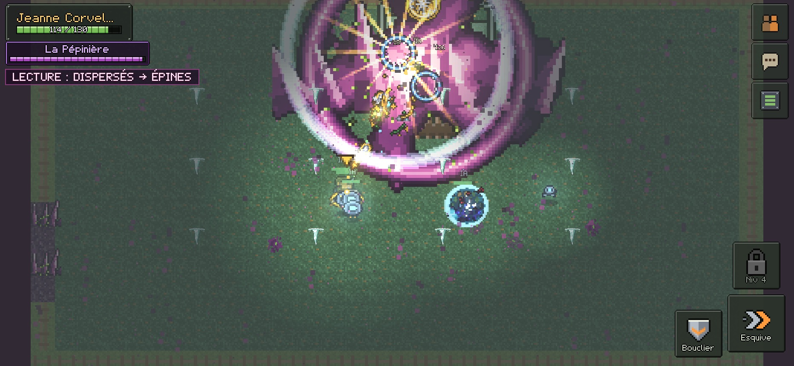
L'essaim de la Pépinière
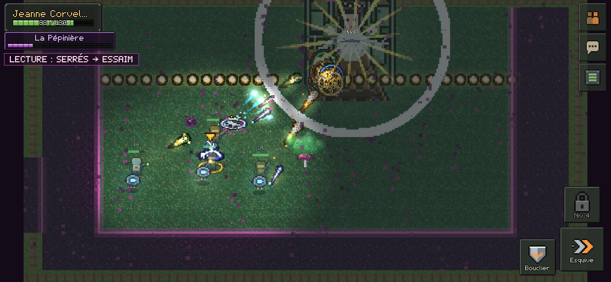
Le Registre : les porte-noms (« Ferrand, Paul », « Ferrand, Jeanne : rendu »)
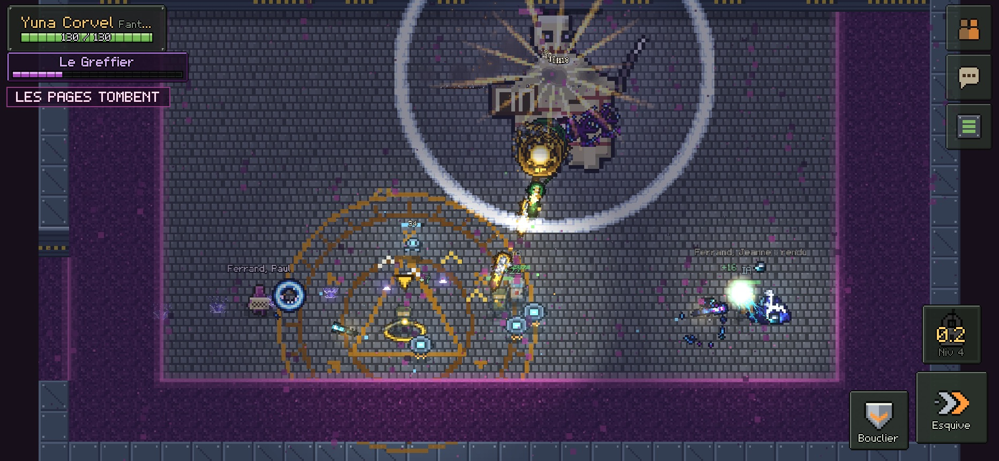
Les pages qui tombent
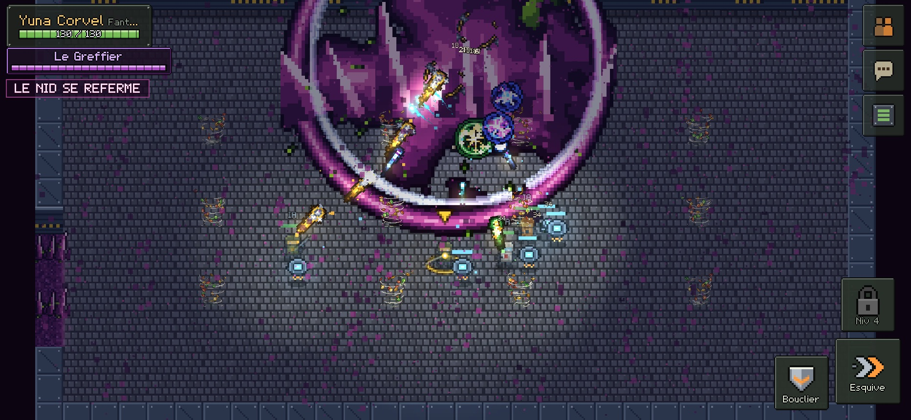
La pince de la Glaneuse
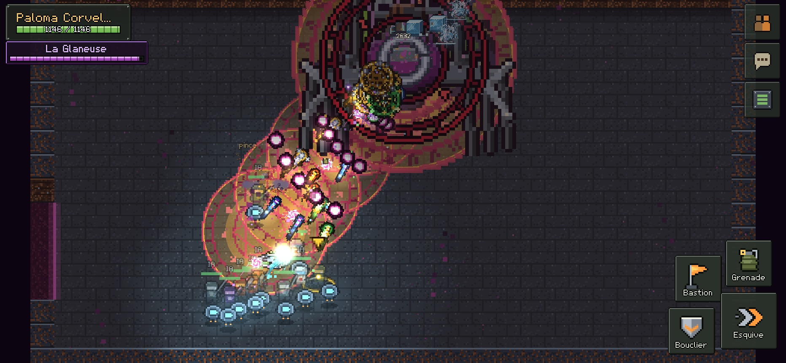
Les fils du Métier
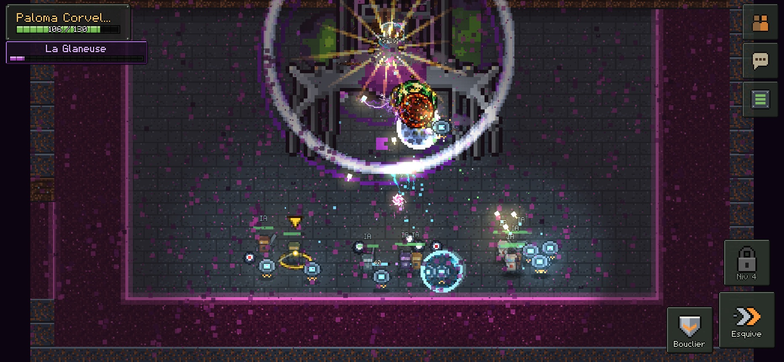
Nouveau : campagne 2, lot 6 — le raid « L'assaut du Métier » contre la Glaneuse (932 × 430)
Un raid à dix, ouvert dès le niveau 30 (prévu pour le 33), entrée au pied du Métier. Les IA comblent les rôles, et l'ingénieur IA veille les robots. La glane : elle choisit le robot le plus loin de son soldat et le tire à elle avec un câble de sève pendant 4 s. Le cercle qui le suit est vert s'il est veillé, orange sinon. Si personne n'est dans le cercle quand il se referme, le robot s'éteint et une balise tire pour elle à sa place ; elle gagne 15 % de dégâts et reprend 3 % de PV. Détruire la balise rallume le robot. La pince frappe le soldat le plus proche : un fantassin ou un démolisseur encaisse, un autre prend ×3. Phase 2 : deux pylônes la cuirassent et tirent des bandes chacun leur tour. Phase 3 : l'appel, un grand cercle autour d'elle, puis les fils en colonnes. Lié au front : le foyer du Métier règle sa force (×0,8 à ×1,3). Sa chute fait reculer les trois foyers des Hauts et compte pour la fin de la campagne. Tests : dix IA avec leurs rôles gagnent (3 graines, 156 à 175 s). Sans tank, le raid tombe en 46 s. Sans veilleur, 21 robots glanés et le raid tombe. La campagne 2 est jouable de bout en bout dans les tests, avec les deux choix et leurs fins. Forge : la glane est originale ; la pince et l'appel sont des conventions de genre, assumées.
Les trois boss en pixel art (×4, deux images chacun)
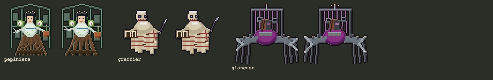
La glane : le robot tiré par le câble, veillé (cercle vert)
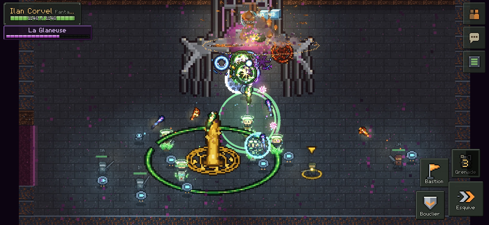
Phase 3 : les fils tombent en colonnes
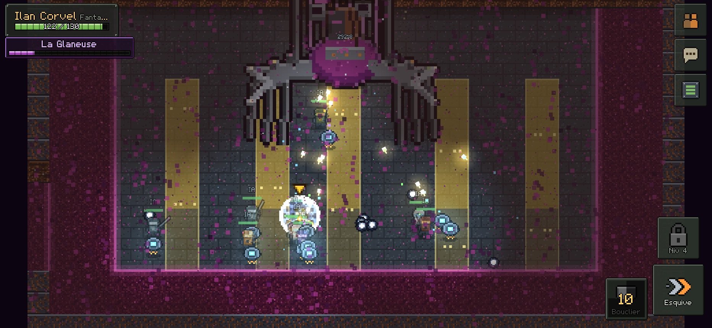
Nouveau : campagne 2, lot 5 — la Serre et le Registre, normal et héroïque (932 × 430)
Deux donjons en lacets, chacun en normal et en héroïque : la Serre (entrée au fond des Serres, niveau 27, héroïque 32), où des racines ont envahi les allées, et le Registre (sous le pied du Mât de relais, niveau 30, héroïque 35), aux murs de métal. Chacun a sa pénombre (verte sous le verre, couleur d'encre au Registre). La Pépinière (Sun-Hee Park) : au début de chaque phase, elle lit comment le groupe s'est tenu pendant 8 s, robots compris, et l'annonce en bandeau. Serrés, c'est l'essaim : un cercle sur le plus gros groupe. Dispersés, ce sont les épines : une bande sur le plus seul. On la trompe avec ses robots. Elle pose aussi des pots qui n'éclosent que si personne ne les garde. En phase 3, la serre se ferme et les vitres tombent en colonnes. Le Greffier (Tobias Wren) : il appelle des noms de soldats morts sur le serveur, et chaque porte-nom marche vers lui avec son nom au-dessus. Les balles ne lui font rien : on va le toucher pour rendre le nom, ce qui soigne le groupe. S'il arrive, le nom est cousu au registre et la rature s'élargit. La rature est une bande sur la droite des deux soldats les plus éloignés. En phase 3, les pages tombent et l'encre monte en anneau. Une seule zone annoncée à la fois. Le soldat parfait passe les quatre combats sans un coup de zone (6 graines chacun). Les boss sont dessinés en pixel art, et les quatre entrées sont dans le menu de test. Forge : l'appel, d'abord trop proche de Gluth (WoW), a été refait. Le reste est original, ou relève de conventions (la rature).
Le menu de test
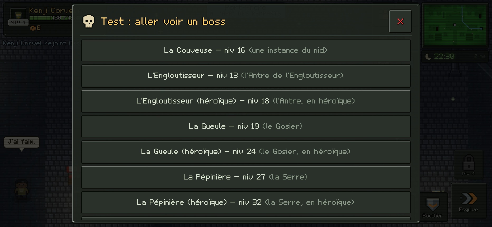
La Serre : l'entrée
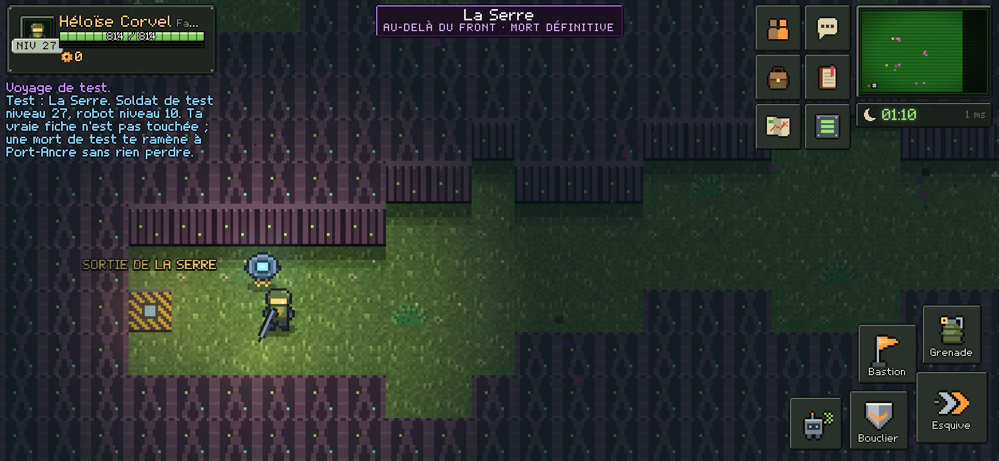
Le Registre : les lacets (vue large)
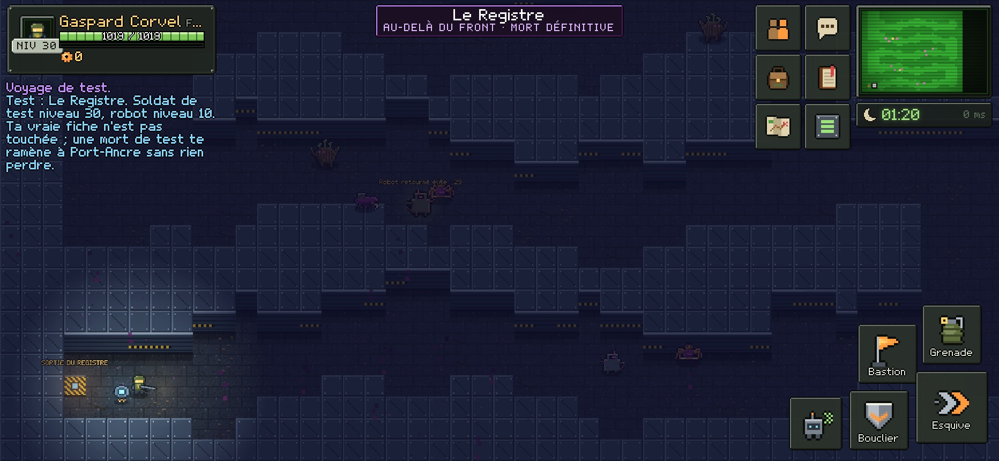
La Pépinière, phase 1
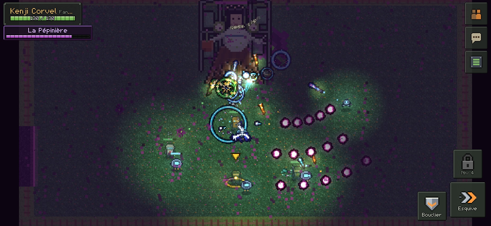
La Pépinière, phase 2 (un pot éclos, l'essaim)
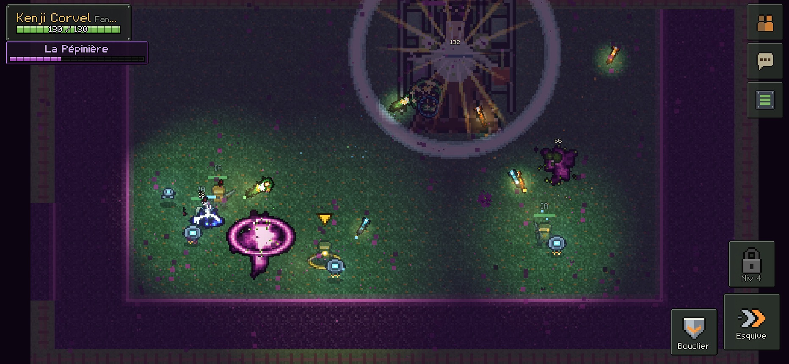
La Pépinière, phase 3
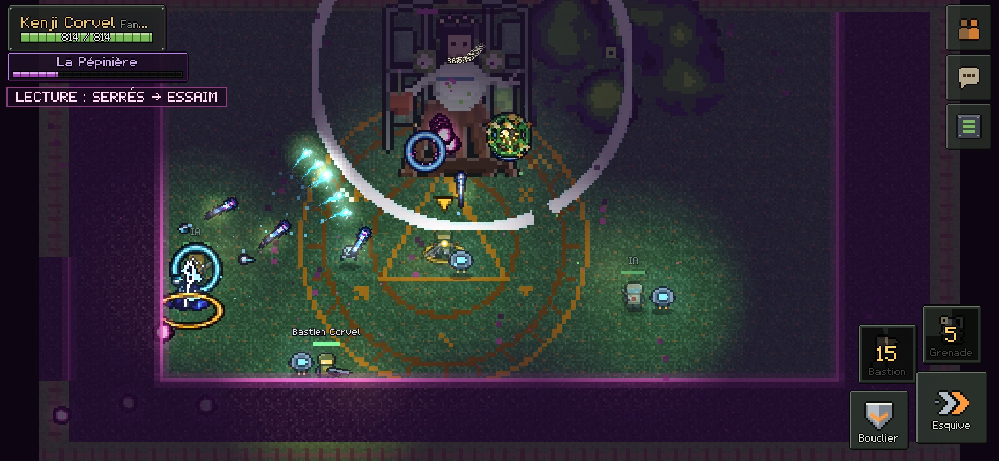
Le Greffier, phase 1
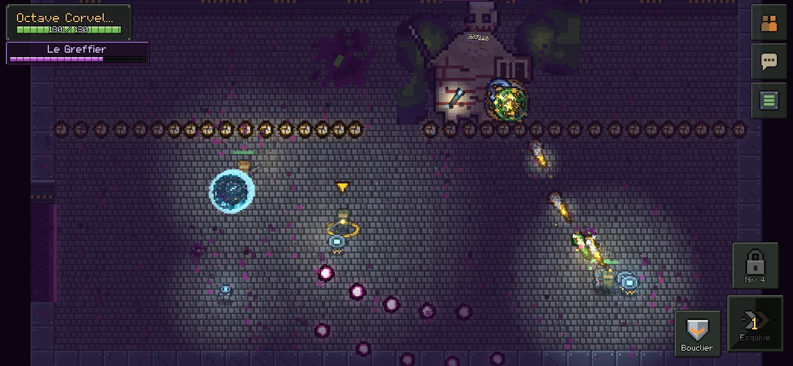
Le Greffier, phase 2
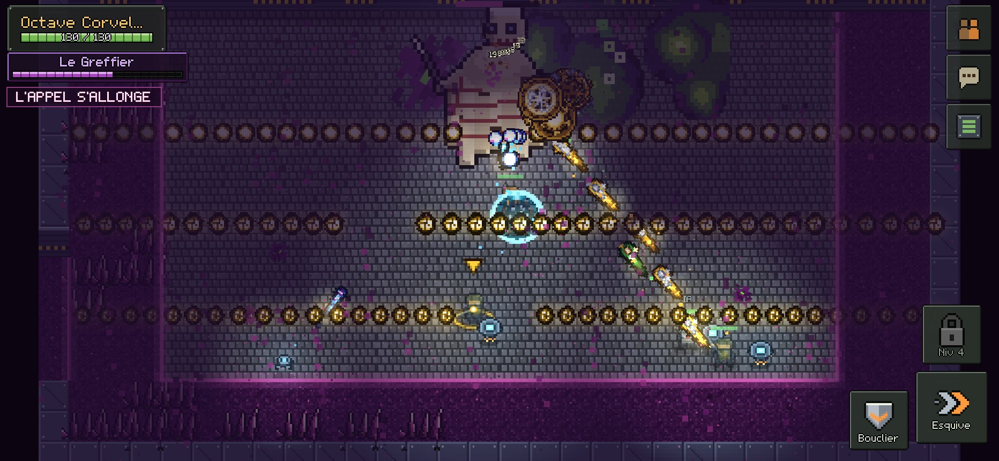
Le Greffier, phase 3 : les pages tombent
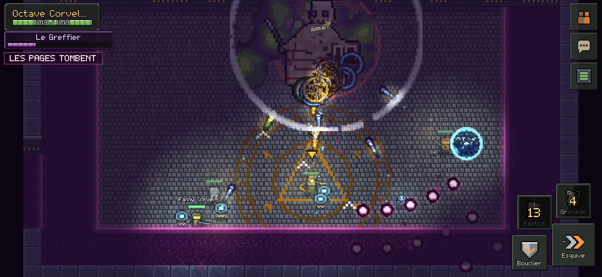
Nouveau : campagne 2, lot 4 — les quêtes des Hauts (932 × 430)
35 quêtes (niveaux 20 à 35), en français et en anglais, en trois actes. Trois entrées selon la fin de la campagne 1 (la Sente par Maëlle si Haute-Sève a été tue, les Exilés par Ysolde si elle a été livrée, la Traversée par la barge si on a évacué). Acte 1 : Relâche, le Gué, le Sillon, le Tisserand (un robot à moitié tissé qui parle en minuscules) et le robot assis. Acte 2 : la lecture de la Pépinière (« lui mentir »), le carnet de Sun-Hee Park, la Serre, la voix d'Okonkwo dans le mât, Cantor qui retrouve le nom de Mira, le Métier vu de près : une antenne. Acte 3 : la crête, le Registre, le foyer du Métier, puis le choix (couper le Métier et rendre les robots, ou le laisser parler et envoyer la liste de toutes les lignées), et l'assaut de la Glaneuse : trois fins (délivrés, laissé, repli si le front a trop avancé), toutes terminées par Varga qui répond. Huit lectures nouvelles. Vérificateur : 70 quêtes, 0 problème.
Le robot assis (lecture, FR)
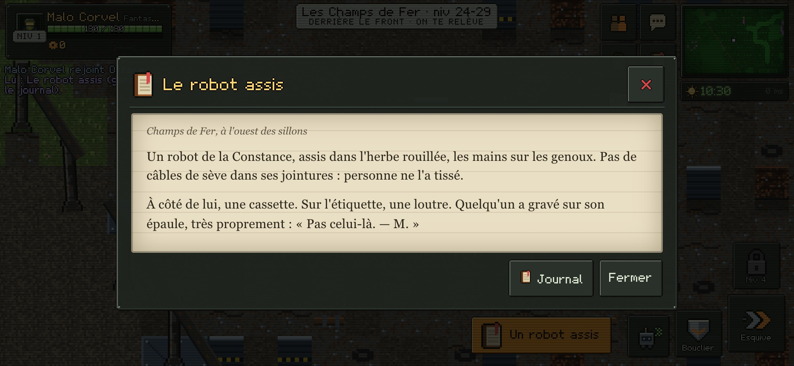
The Seated Robot (EN)
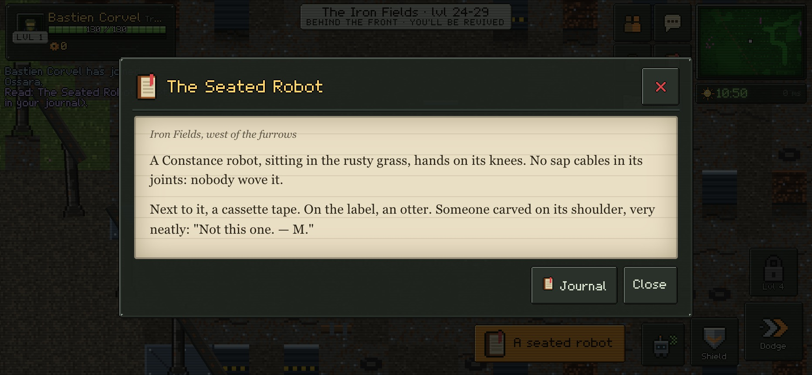
La maquette de Hélène, à la capitainerie de Relâche
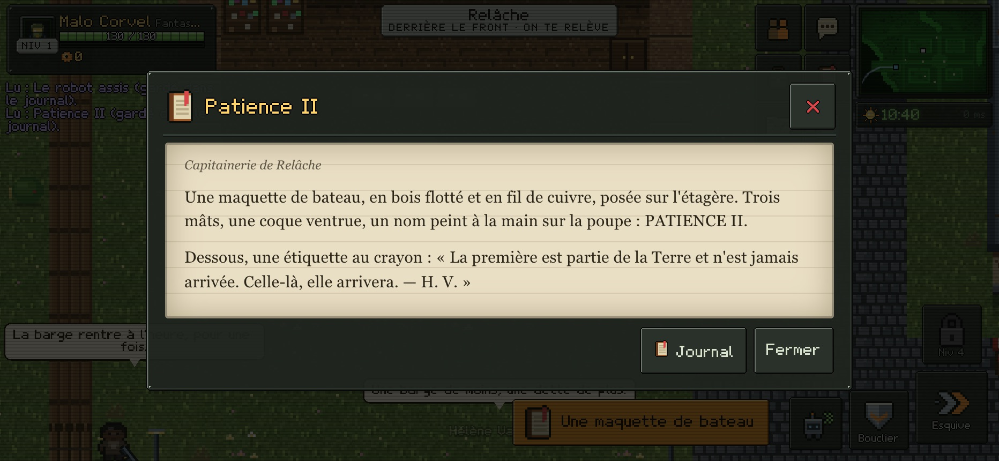
The Greenhouse Notebook (Sun-Hee Park)
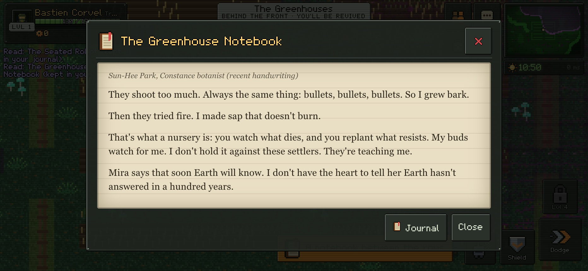
Nouveau : campagne 2, lot 3 — les créatures, la lecture de la Pépinière, le butin des Hauts (932 × 430)
Neuf créatures dessinées en pixel art (pas des teintes) : le Glaneur (il préfère les robots : quatre morsures et le robot s'éteint 6 s), le robot retourné, le bourgeon-espion (fixe, il compte), le Bouturé (il laisse un pot qui repousse en 8 s si on ne le casse pas), la Fileuse (un tir sur trois est un fil annoncé au sol), et pour les donjons et le raid : pot, balise glanée, porte-nom, pylône. La lecture de la Pépinière : les morts des Hauts sont comptées par source (balles, explosions, robots, compétences), double près d'un bourgeon ; quand une source domine, les créatures des Hauts en prennent 30 % de moins, et c'est affiché à tous sous le nom de la zone. Le butin : quatre tables (niveaux 20 à 35), cinq légendaires des Hauts (Fil du Métier, Masque de sève, Gants du Recenseur, Bottes du Sillon, Bobine du Tisserand) et un ensemble, la Trame du Métier. Forge : tout original, rien à retravailler.
La planche des créatures (×6)
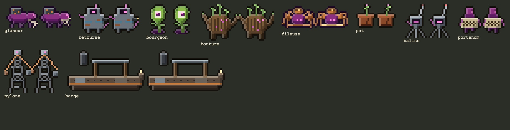
La lecture affichée : « les balles (77 %) »
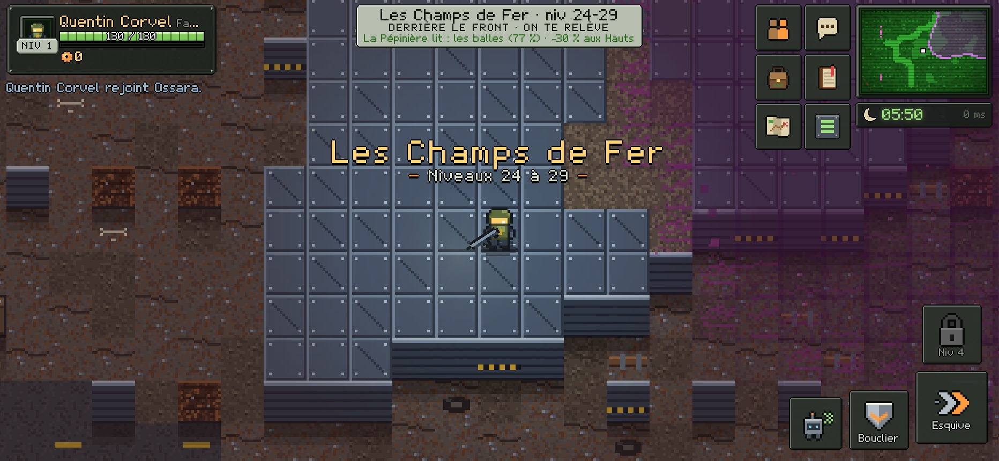
Le Haut-Métier : Glaneurs, Bouturé élite, Fileuses
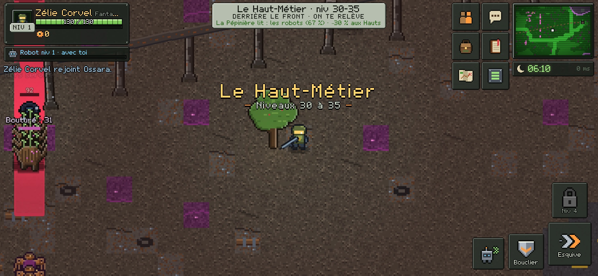
La Pépinière
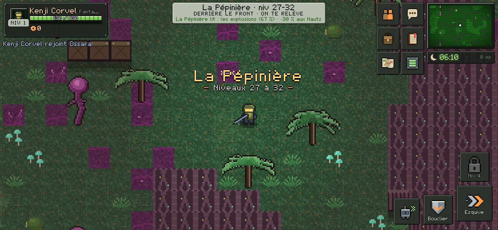
Nouveau : campagne 2, lot 2 — les Hauts de Glane, le territoire (932 × 430)
À l'est d'Ossara, au-delà du front nord : un massif relié par un isthme (au nord-est de la Grande Ruche) et par la mer. Quatre régions : la Lisière (niv 20-24), les Champs de Fer (24-29), la Pépinière (27-32), le Haut-Métier (30-35). Une ville, Relâche (le port des Ferrailleurs et des exilés : capitainerie, forge, auberge, atelier du Tisserand, des habitants). Le Gué de Glane (poste du Corps, Brune Kessler), le camp du Sillon, les Serres, le Mât de relais et, de loin, le Métier. Trois foyers de la Glaneuse font le front (ils ne comptent pas dans la fin de la campagne 1). La ligne de Glane prolonge le monorail depuis le Bastion (haltes du Gué, des Champs et du Mât, à réparer) ; la barge relie Anse-Grise au quai de Relâche (ouverte dès le départ). Les chemins font des lacets. Les créatures, les quêtes et le butin arrivent aux lots suivants.
Relâche, la place
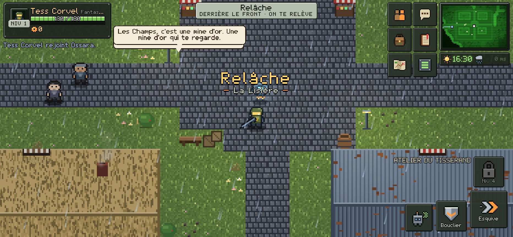
Le quai de Relâche
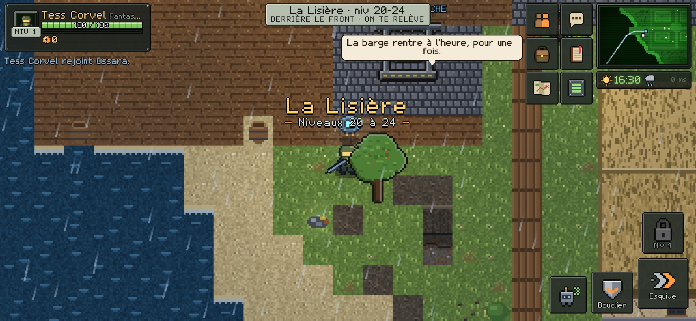
La barge, en pleine traversée
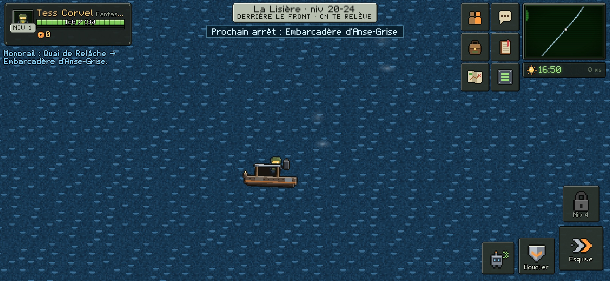
Le Gué de Glane
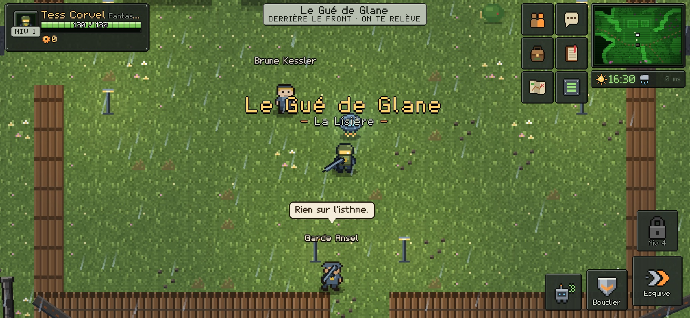
Les Champs de Fer (dans un foyer de la Glaneuse)
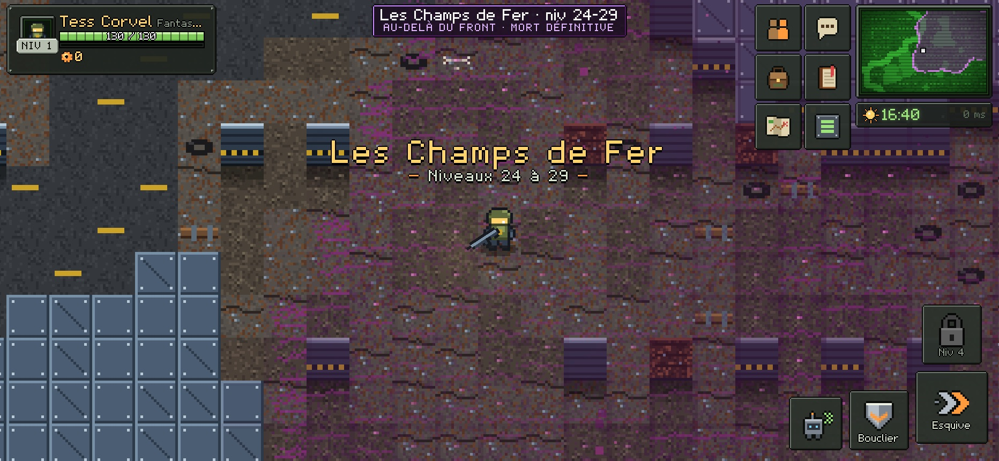
Les Serres de la Pépinière
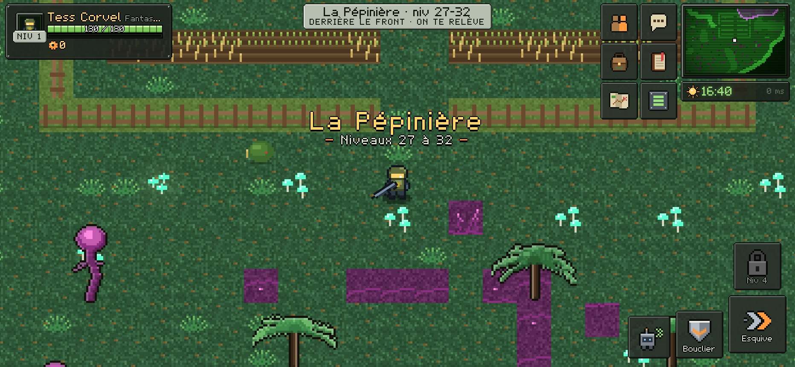
Le Mât de relais
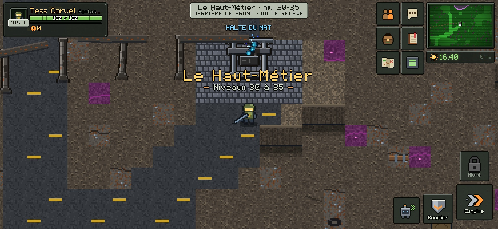
Le Métier, vu de loin
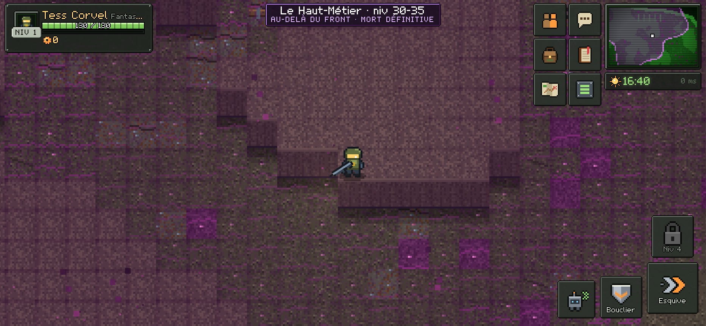
La carte : la ligne de la barge
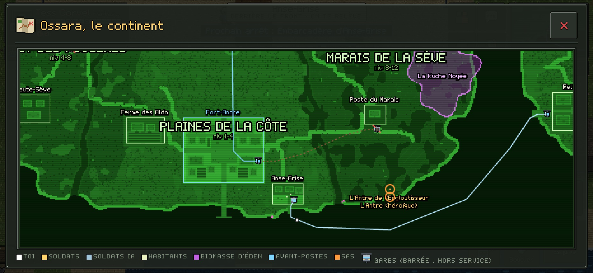
Nouveau : pixelfx, le moteur d'effets officiel (avant / après en jeu, 932 × 430)
Les effets refaits avec pixelfx (MIT), recolorés à nos palettes et en « pixels fins » (affichés à ×0,5 pour coller à nos soldats). À gauche l'ancien build, à droite le nouveau, avec exactement la même suite d'effets : butin par rareté et impacts ; grenade, compétences et tirs hauts des nouvelles classes ; mortier, équipement, sac de la Couveuse (de la chair, plus un œuf), états, biomasse.
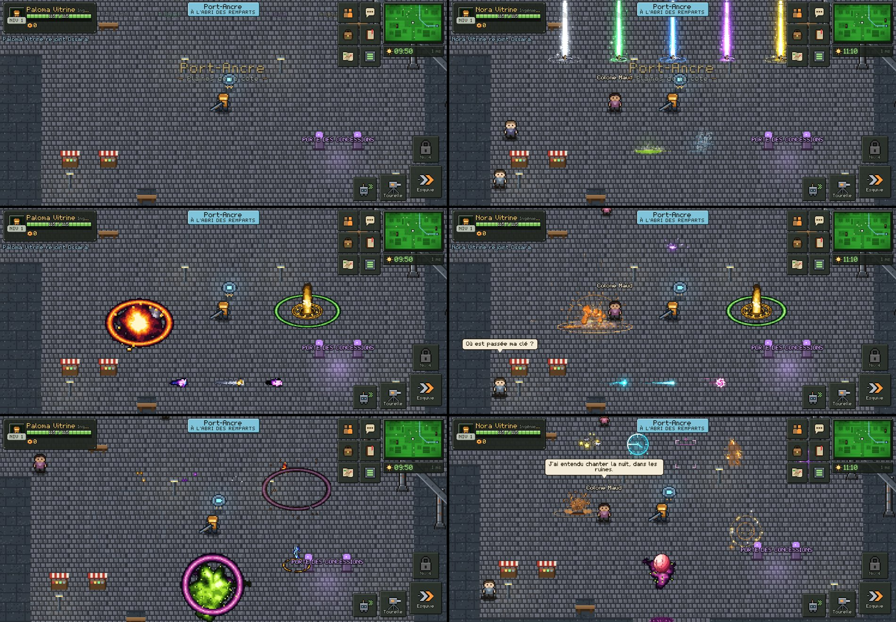
Après (15 s) :
Avant (même suite) :
Dans le raid du Semeur : le pommier (un effet pixelfx à nous, plus un dessin en code) et le sceau de la greffe qui suit le soldat marqué.
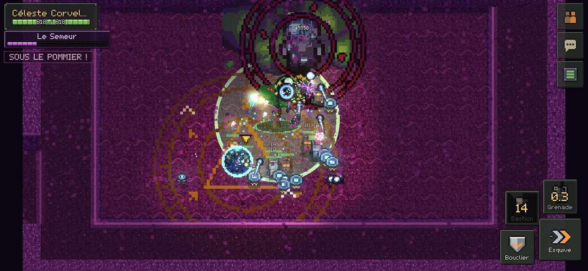
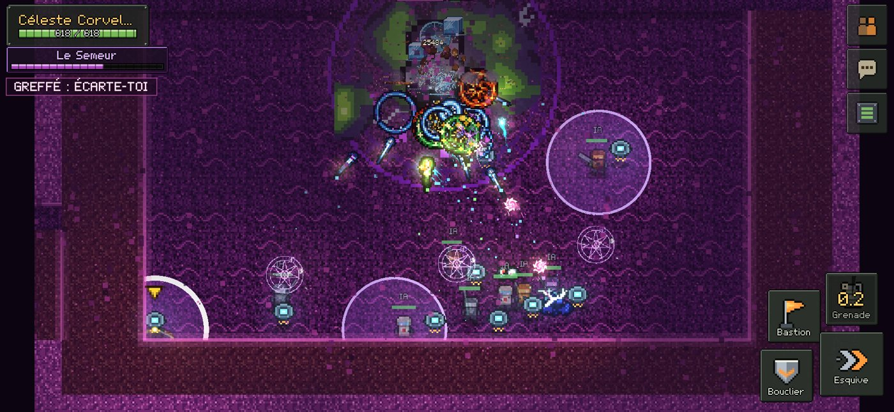
Toutes les planches pixelfx (×4) :
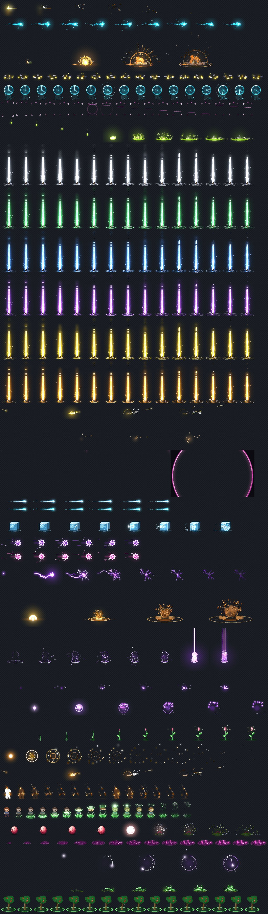
Nouveau : les trois derniers défauts d'interface (avant à gauche, après à droite)
Au bureau (1920 × 1080), l'arène remplit l'écran au lieu de tenir dans un timbre-poste (le zoom monte jusqu'à celui du monde ouvert ; la caméra suit le soldat quand l'arène dépasse). Les bulles des habitants ne passent plus sous la colonne d'icônes, la minicarte, les fiches ni le nom de la zone : elles glissent vers le centre. Sur la grande carte, un nom à cheval sur le bord de la vue n'est plus coupé : la vue glisse pour le montrer en entier (ici « Marais de la Sève » sur iPhone). Audit : zéro remarque sur les huit formats.
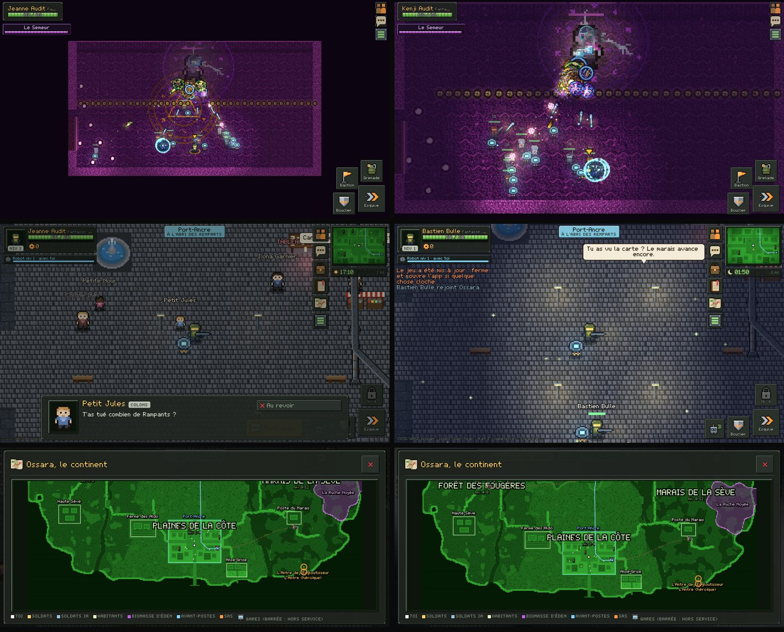
Nouveau : la quête « Ce que la Gueule avale » (Joss, niveau 19, après « Le nid »)
« Les robots qu'on perd au nord ne sont pas cassés : ÉDEN ne casse pas le métal. La Glaneuse les éteint, et la Gueule les avale tout entiers, au fond du Gosier, derrière la Gueule du nid. Il y a là-dedans des robots de lignées qu'on croyait éteintes. Va ouvrir cette gorge, et rapporte-moi ce qu'elle garde. » Objectif : abattre la Gueule au fond du Gosier. Fin : des châssis intacts, mis de côté par Okonkwo, pour on ne sait qui (fil de la campagne 2). Et le raid du Semeur devient le dernier pas de la campagne 1 : « La racine » (Ysolde, niveau 18).
Audit : l'interface sur huit formats, avant / après
Chaque écran (création, monde, menu, sac, journal, carte, talents, son, social, menu de test, lignée, atelier, gare, relève, dialogue, monorail, arènes) capturé automatiquement sur iPhone en paysage (932 × 430, 844 × 390) et en portrait, petit Android (800 × 360), iPad, bureau 1280 × 720, 1920 × 1080 et 2560 × 1440, en français et en anglais, sous Chrome et sous WebKit (le moteur de Safari), avec un contrôle dans la page : texte coupé, éléments hors de l'écran, blocs qui se chevauchent, boutons trop petits au doigt. Avant : 84 remarques sur le seul iPhone en paysage. Après : aucune, sur tous les formats (le portrait hors arène reste couvert par « tourne ton téléphone », c'est voulu). Corrigé : toutes les cibles font au moins 44 px au doigt ; le bouton « Partir au front » et « Prendre la relève » étaient sous le pli en paysage ; la barre du boss chevauchait la fiche du soldat dans l'arène ; la colonne d'icônes descendait sur les compétences (deux colonnes sur écran bas) ; le menu sur cinq colonnes ; sur bureau, l'interface tenait dans un timbre-poste en 1920 × 1080 : elle grossit maintenant ×2 (×3 en 2560 × 1440) ; la classe en anglais dans « Ma lignée » en français ; l'aide clavier passait sous les boutons ; le ping se masque dans le menu. Clavier et souris vérifiés au bureau (ZQSD/WASD, N, I, J, M, Échap, visée et tir à la souris, infobulles).
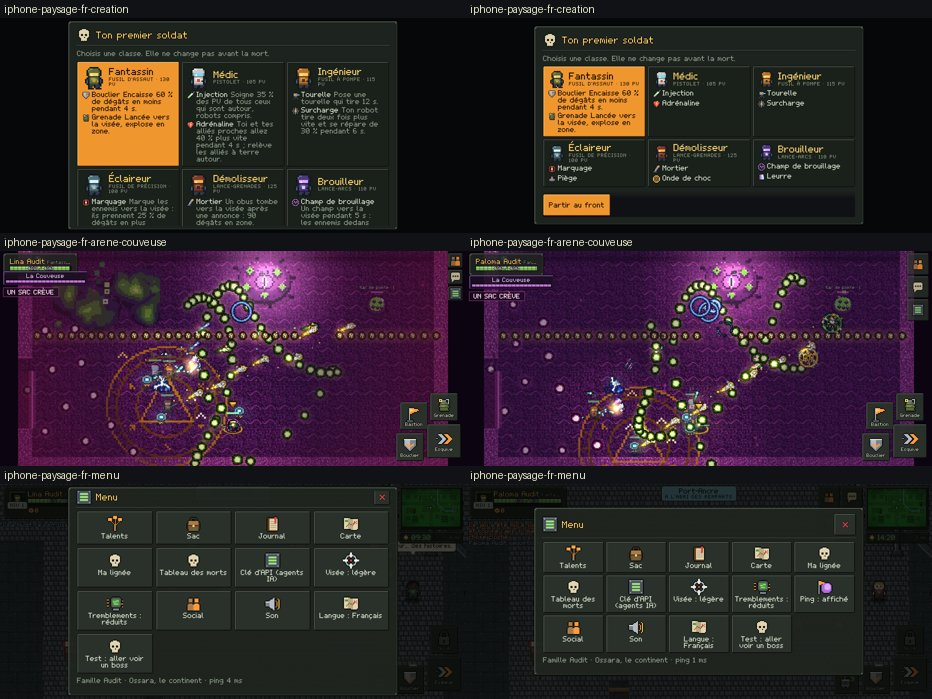
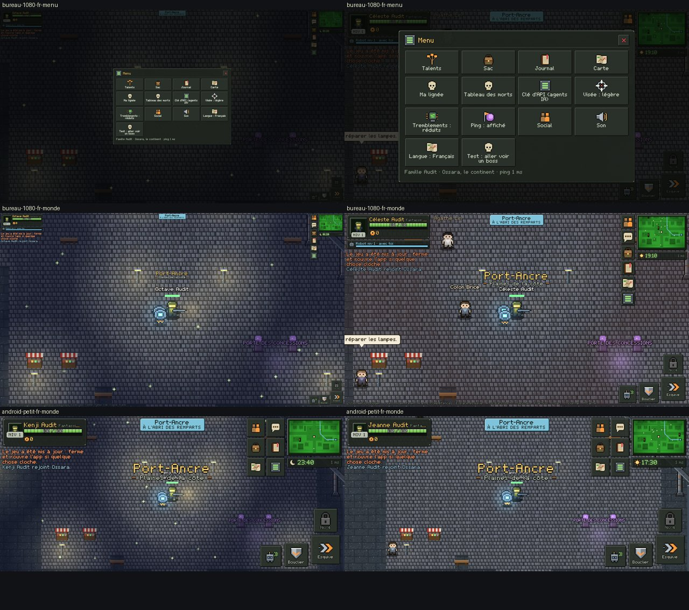
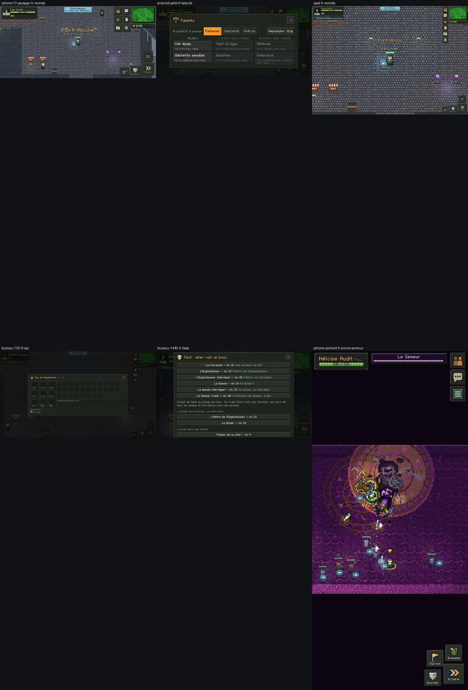
Nouveau : le social (932 × 430, deux soldats en même temps)
Deux nouveaux boutons en haut à droite : Social et Discussion. Discussion : canaux Ici, Groupe, Guilde et Monde, plus « /m Nom message » en privé ; texte nettoyé (140 caractères), débit limité. Groupe (dix au plus) : invitation, chef, exclusion. L'XP d'un coup est partagée entre les membres proches (+25 % par membre de plus) ; le butin tourne, et sur un boss chacun reçoit le sien. Le groupe entre dans la même instance. Cadres de PV des membres sous la plaque. Cinq marques (sur l'ennemi le plus proche ou au sol), visibles du groupe seul. Échange : objets du sac et ferraille ; il faut que les deux verrouillent, puis que les deux confirment, et toute modification annule les verrous. Le serveur revérifie tout au moment de faire : les deux sont présents, dans la même salle, à moins de 10 m, debout, les objets sont toujours dans le sac, la ferraille est toujours en banque et il y a la place. Sinon rien ne bouge. Guilde : nom et sigle, trois rangs (membre, officier, chef), canal à elle. Duel consenti, hors instance : au fusil, 90 s au plus ; à 1 PV on perd sans tomber, et les PV sont rendus ; s'éloigner, c'est abandonner. Tout est en français et en anglais. Testé : tests/social.test.ts (base en mémoire).
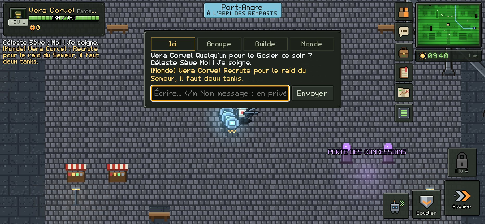
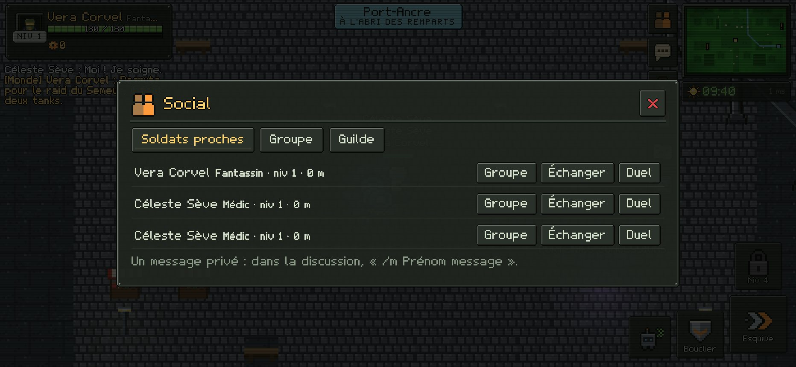
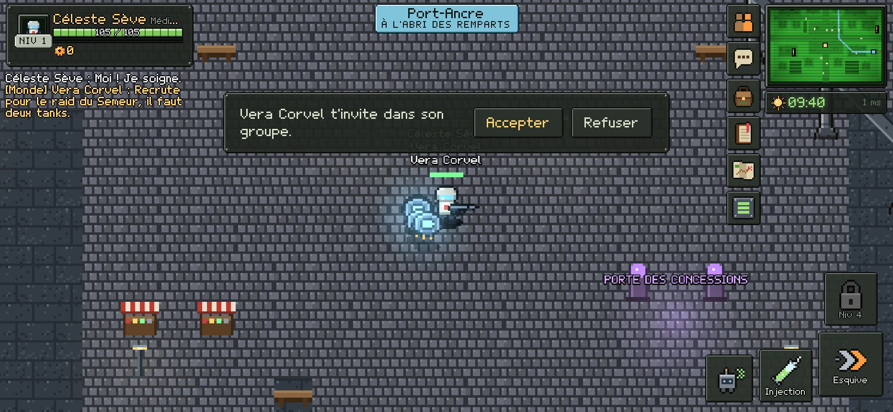
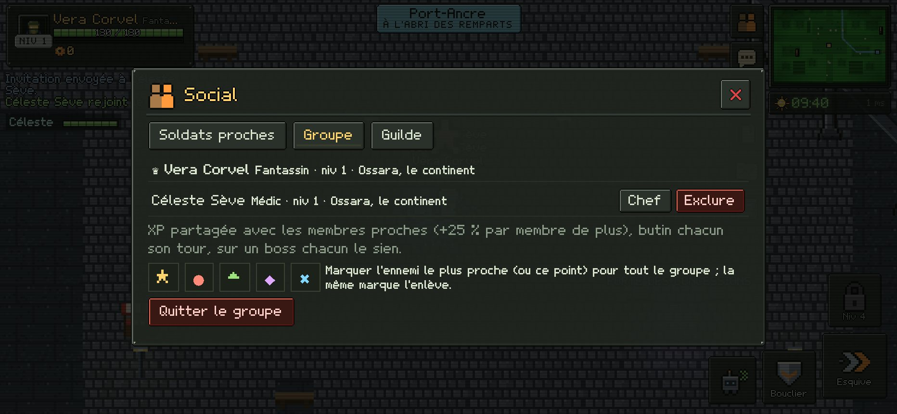
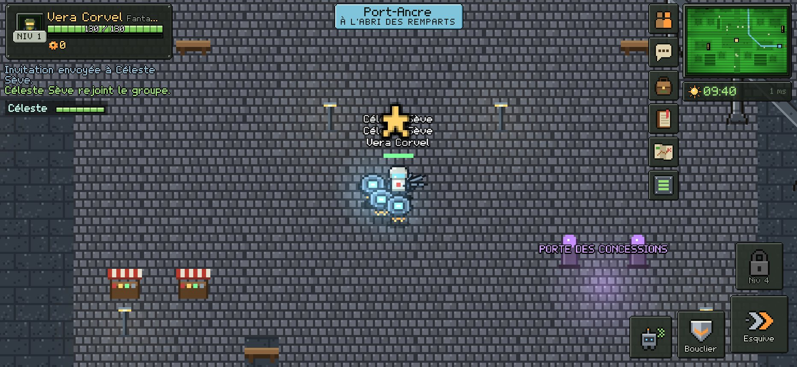
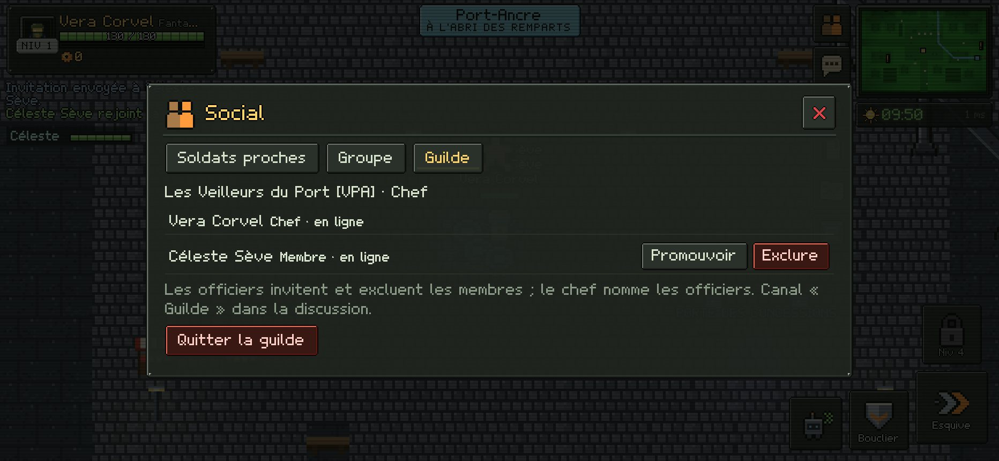
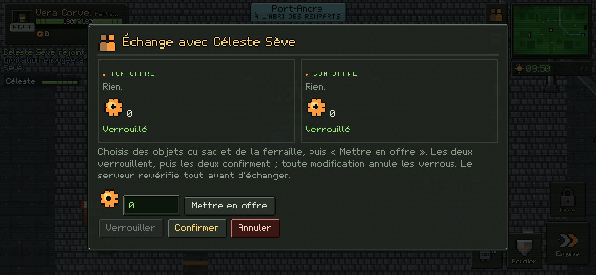
Nouveau : le raid, « L'offensive du Semeur » (932 × 430)
À dix, à partir du niveau 18 ; les soldats IA complètent selon les rôles : deux tanks (fantassins), deux soigneurs (médics), des tireurs. Entrée près de la Grande Ruche. Le raid est lié au front : la Grande Ruche donne sa force au Semeur (PV ×0,8 à ×1,3 selon son rayon), et sa chute la fait reculer de 16 tuiles (les autres ruches de 4), pour tout le serveur. Trois phases, dans l'arène de paysage. La taille (toutes les phases) : une ligne vers le soldat le plus proche ; le tank la prend, sinon le Semeur gagne de la sève (+10 % de dégâts, jusqu'à 5). Les boutures (phase 1) : deux zones à tenir à trois, avec un compteur ; trop peu de monde, la bouture prend racine (deux greffés). Les greffes (phase 2) : trois soldats marqués, le cercle les suit puis se fige une seconde avant d'éclater : s'écarter. Le désherbage (phase 3) : tout brûle sauf sous le pommier, qui repousse près du groupe. Testé : dix IA avec leurs rôles gagnent en 215 à 240 s ; sans tank, le raid tombe (tests/raid.test.ts).
Nouveau : deux donjons, normal et héroïque (932 × 430)
L'Antre de l'Engloutisseur (niv 13, héroïque 18) et le Gosier, avec un nouveau boss, la Gueule (niv 19, héroïque 24). Entrées sur le continent ; chaque donjon est une instance de groupe (des soldats IA complètent). On y monte en cinq lacets avec des groupes d'ennemis, jamais tout droit (204 pas contre 64 à vol d'oiseau), puis l'arène de paysage. L'héroïque s'ouvre après une victoire en normal : PV ×1,6, coups plus forts et plus rapides, butin meilleur (un objet de plus, légendaires doublés, une pièce d'ensemble en plus). Engloutisseur : saut annoncé en cercle, reflux de vase sur l'endroit où le groupe se tient, sangsues, aspiration en phase 3. Gueule : crocs en colonnes, langue en ligne, dents en damier, une zone par phase ; filets de salive. Une zone à la fois, au plus quatre motifs en vol ; un soldat parfait n'en prend aucune (6 graines par donjon, tests/donjons.test.ts). Tous les boss sont dans le menu de test, au bon niveau.
Nouveau : butin et équipement (932 × 430)
Neuf emplacements : arme, casque, armure, gants, bottes, deux modules, et deux pièces pour le robot (châssis : ses PV, canon : ses dégâts). Six raretés : commun à épique (0 à 3 affixes tirés parmi 15 : critique, recharge, vol de vie, portée…), légendaire (8, chacun avec un effet), pièce d'ensemble (3 ensembles de 4 pièces : Couveuse, Engloutisseur, Constance ; bonus à 2 pièces, effet à 4). Tables de butin par région, épave, nid et boss (chaque boss lâche une pièce de son ensemble). La fiche compare avec l'objet porté (vert : gain, rouge : perte). Recycler donne de la ferraille et des pièces de robot. Objets portables jusqu'à 3 niveaux au-dessus du sien. Équilibrage simulé (tools/sim-butin.ts).
Nouveau : talents, spécialité, maîtrise (932 × 430)
Six classes (Éclaireur, Démolisseur, Brouilleur en plus). Un point de talent par niveau, trois paliers par arbre (0, 5, 10 points), rangs 1 à 5. Compétences ouvertes aux niveaux 1 et 4 ; au niveau 15, une spécialité (deux par classe) donne une troisième compétence et un second arbre ; au niveau 30, une maîtrise (24) change cette compétence. Tout reprendre coûte 15 × niveau de ferraille. L'héritier reçoit jusqu'à 3 points, et la spécialité de l'ancêtre s'ouvre au niveau 10. Menu → Talents (touche N), pastille jaune sur le menu quand il y a un choix à faire. Captures sur un banc à part, vrai client.
En combat (soldat de test à la Couveuse, pilote auto) : Marquage, Piège, Tir perforant ; les ennemis marqués, ralentis, étourdis portent leur cercle.
Nouveau : le son (932 × 430, avec le son)
Musique, ambiances et bruitages, enregistrés depuis la sortie audio du vrai client. Port-Ancre (musique de ville, ambiance du port, tirs, impacts), le monorail du Port au Col (cloche, portes, roulement du rail, la musique passe à l'exploration et l'ambiance suit les régions traversées), puis la Couveuse en arène (musique de boss, plus intense en phase 2, cris, motifs de balles, zones). Volumes Musique / Ambiance / Effets / Interface et « Couper le son » dans le menu, case Son. Mets le son de la vidéo.
Nouveau : le jeu en anglais (932 × 430)
Tout le jeu passe par des clés de traduction (shared/i18n) : interface, quêtes, dialogues, habitants, lieux, objets, boss, monorail. Langue du navigateur au premier lancement, puis « Langue : Français / English » dans le menu. Captures prises en anglais, sur un vrai client.
Nouveau : le monorail, un vrai transport (932 × 430)
Un réseau surélevé sur piliers relie les six gares : la Ligne du Col (Marais → Port-Ancre → Col → Bastion) et la Ligne de l'Ouest, embranchement au Col (Fougère → Épave). Les tronçons vers une gare pas encore réparée sont cassés. La rame rouillée de la Première Vague arrive, freine et ouvre ses portes. Ton soldat monte (on le voit dans la cabine, le robot aussi), la rame suit le vrai rail et ralentit aux gares traversées, puis te dépose sur le quai. Pendant le trajet : la caméra suit et recule un peu, tu ne peux ni tirer ni être touché. Vrai trajet de Port-Ancre au Col (12 s), sans pilote automatique : le joystick et les boutons sont touchés pour de vrai.
Monde ouvert : le bloc de gauche, avant / après (932 × 430)
Avant : deux quêtes sur plusieurs lignes, la plaque du robot, des messages longs.
Après : une seule quête, sur une ligne (titre, objectif, progression), la pastille jaune dit qu'une autre quête est à rendre ; la plaque du robot ne s'affiche que s'il a quelque chose à dire ; deux messages au plus. Un toucher sur la quête ouvre le journal (bouton « Suivre » sur chaque quête, choix gardé), le chevron « ‹ » la replie en une petite icône (gardé aussi).
Nouveau : moins de tremblements, des zones toutes évitables
L'écran ne tremble plus que pour les grands moments (sac crevé, changement de phase, mort du boss), court et léger ; jamais sur les tirs ni quand tu prends un coup (le bord de l'écran rougit et ton soldat clignote). Réglage « Tremblements : aucun / réduits / normaux » dans le menu, « réduits » par défaut. Les zones tournent une par une, annoncées au moins 1,3 s, jamais en même temps que les vagues de balles ; le sol arraché cicatrise en 9 s et n'abîme jamais plus d'un quart de l'arène. Un soldat « parfait » qui ne fait que marcher (sans esquive ni soins) finit le combat sans un seul coup de zone, sur 10 graines.
Le moment le plus chargé de ce combat :
Version précédente
Nouveau : l'arène en paysage
L'arène est maintenant large (28 × 14 cases) et tient entière sur un iPhone en paysage (932 × 430, la taille de ta capture) : la Couveuse en haut, ses deux sacs sur les flancs, la place pour esquiver sur les côtés. Ton soldat a un anneau et un chevron dorés, avec un point blanc au centre (là où les balles te touchent) ; les soldats IA sont estompés et marqués « IA ». Les annonces passent sous la barre du boss, en haut à gauche ; plus de pluie au nid, le hors-arène est noir. Pas de pilote automatique : les deux joysticks sont tenus par de vrais touchers d'écran.
Tenu droit (secondaire) : la caméra suit le soldat sur les côtés.
Avant : l'arène en hauteur
Nouveau : un vrai client, l'interface épurée
Pas de pilote automatique : le bouton de test comme toi (menu → boss → « La Couveuse — niv. 16 »), puis le téléphone tenu droit. Les déplacements et les tirs passent par les commandes tactiles, envoyées au serveur comme celles d'un joueur. Pendant le combat il ne reste que la barre du boss, tes PV, la surcharge, les compétences et le petit bouton menu. Soldat de test niveau 16 : ta vraie fiche n'est pas touchée.
Avant : en pilote automatique
Combat réel filmé en pilote automatique, téléphone tenu droit (393 × 852). Groupe de quatre soldats de niveau 16, dont trois soldats IA de la Colonie. Les PV du boss sont réglés pour le banc (×1,1).
- Phase 1 : les flots d'acide des deux sacs se croisent, les salves sont visées, des vagues de spores laissent un trou, et la ponte s'ouvre en damier.
- Phase 2, à 66 % : la ruche se referme (les murs de chair avancent), la Couveuse lance des spirales et des colonnes de spores.
- Phase 3, à 33 % : elle arrache le sol (des veines d'acide et de vide) et fait éclater des anneaux autour des soldats.
La vidéo en pleine qualité (64 Mo)